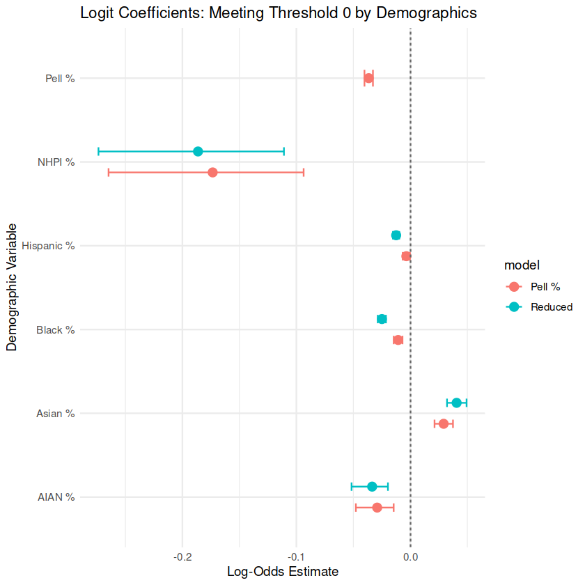

Introduction
EdTrust’s mission is to advance policies and practices to dismantle the
racial and economic barriers embedded in the American education system.
We approached our research project with the purpose of addressing
larger systemic issues with American higher education.
ROI frameworks help prospective students and their families plan for higher education,
and so the way in which ROI is calculated and presented to families is extremely
important in determining which institutions get more or less funding or resources.
Current ROI frameworks focus on a purely economic model (most often,
a debt-to-earnings ratio), which neglects student body characteristics that
also influence post-graduate success.
Our research fills a critical gap
in existing ROI frameworks by specifically examining how the calculation of ROI changes for
Minority-Serving Institutions (MSIs) and Predominantly White Institutions
(PWIs) when controlling for key student body characteristics. Traditional
models assess ROI at the institutional or program level but often overlook
how institutional type intersects with student demographics, socioeconomic
status, and structural barriers like labor market discrimination. By
integrating controllable factors like student body characteristics into our
analysis, we aim to determine whether disparities in ROI persist due to
institutional differences or broader systemic inequities. Our refined
approach provides a more accurate and equitable measure of postsecondary
value, ensuring a fairer assessment of institutions that serve historically
underrepresented students. Our findings would not only sharpen ROI
calculations but also inform policy debates on funding and resource
allocation between MSIs and PWIs.
College Scorecard Data Snapshot
Download DatasetPostsecondary Value Commission: Threshold 0
Calculation Framework
Minimum Economic Return: “A student meets this threshold if they earn at least as much as a high school graduate plus enough to recoup their total net price plus interest within ten years.” (p. 40)
An institution meets Threshold 0 if:
10 * (Median salary after higher education degree) ≥
10 * (Median state-level salary for high school degree earners) +
(Average Net Price * Average Time to Credential)
Table of Results and Relevant Variables
Regression Models
We estimated how controlling for the share of Pell Grant recipients affects the likelihood that different Minority‑Serving Institution (MSI) types meet Threshold 0.
We replace the MSI flags with continuous demographic shares—% Asian, % Black, % Hispanic, etc.—to see how each group’s concentration relates to earnings once Pell % is controlled. 
Postsecondary Value Commission: Threshold 1
Calculation Framework
IHEP Earnings Premium: “A student meets this threshold if they reach at least median earnings in their field of study (or, if field of study data is unavailable, the median earnings for the institution’s predominant degree type).” (p. 40)
Current Calculations
-
Earnings Premium:
Median post‑enrollment earnings at institution (10 years after entry) -
Meeting Threshold 1 (binary):
Earnings premium ≥ in‑state median earnings for people with bachelor’s degree
Extensions
Going forward, you might consider incorporating field‑of‑study data (despite its high missingness — 77.5 %) or differentiating by degree type (e.g., bachelor’s vs. associate’s) to refine the threshold calculation.
Threshold 1: Regression Models
Next, we estimate how controlling for the share of Pell Grant recipients shifts the relative earnings premium across different Minority‑Serving Institution (MSI) types.

- HBCUs: Move from underperforming to outperforming non‑MSI schools (≈ +$7,000) once Pell % is included.
- PBI: Also see a noticeable improvement.
- HSI & TCU: Remain largely unchanged.
- ANNHI, NANTI, AANAPII: Experience a modest decrease (≈ $2,000).
Overall, the impact of Pell % is heterogeneous. Because MSI classification is based on whether each subgroup exceeds a fixed threshold (typically ≥ 25 %), using continuous demographic percentages could yield more nuanced insights than a simple binary flag.
Threshold 1: Regression Model with Demographics
We replace the MSI flags with continuous demographic shares—% Asian, % Black, % Hispanic, etc.—to see how each group’s concentration relates to earnings once Pell % is controlled.

Aside from Asian students, controlling for Pell % amplifies the positive association between each demographic share and earnings relative to the White student baseline.
Postsecondary Value Commission: Threshold 2
Calculation Framework
Earnings Parity: “This threshold measures whether students of color, students from low-income backgrounds, and women reach the median earnings of their systemically more advantaged peers (White students, high-income students, or men).” (p. 40)
An institution meets Threshold 2 if both conditions are true:
Table of Results and Relevant Variables
Regression Models
Overall Takeaways
HERE WE WILL GIVE SOME GENERAL CONCLUSIONS!